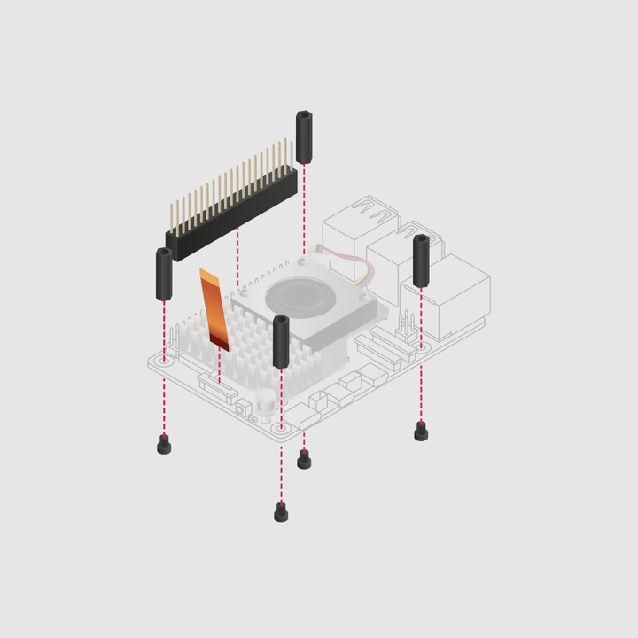
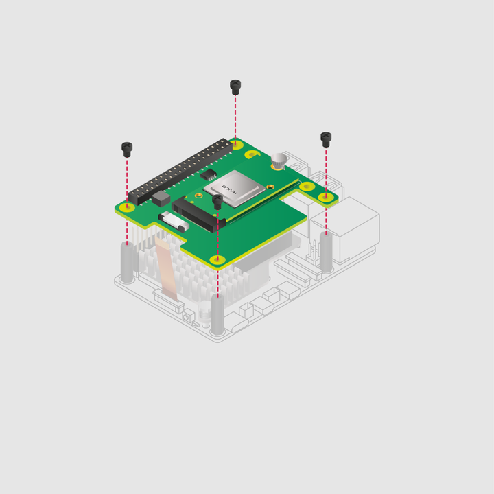
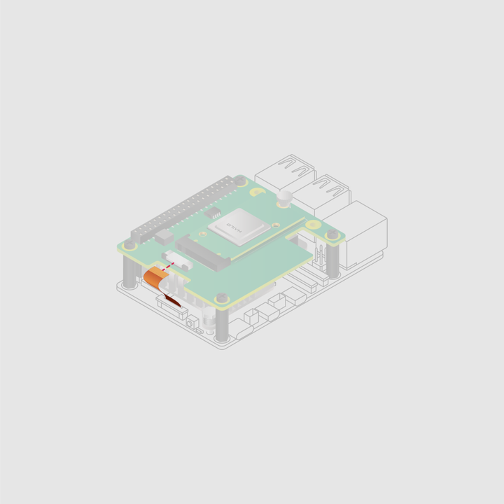

Mount the AI Kit M.2 HAT
Please note that the M.2 HAT+ connects to a 5 using its PCIe port, which is a high-speed interface for connecting hardware components. First, ensure that your 5 is disconnected from power, and then:
- Fit the spacers. Using a cross-head screwdriver, attach the four spacers to the yellow holes on your 5 using the four screws.
- Connect the GPIO stacking header. Align the GPIO stacking header with the GPIO pins on your 5. Press down firmly until the header is fully seated. The orientation of the header doesn't matter so long as all the GPIO pins are correctly aligned and inserted.
- Disconnect the PCIe ribbon cable from your HAT. Slide the retaining clips outwards from both sides of the PCIe connector on the HAT and then gently pull out the cable.
- Insert the PCIe ribbon cable into your . Insert the other end of the ribbon cable into the PCIe connector on your 5. To do this, first slide the retaining clip of the PCIe connector on your 5 upwards from both sides. Then, insert the ribbon cable into the PCIe connector. Ensure that the metallic contact points are facing inwards (towards the USB ports).
Secure the PCIe ribbon cable to your . While holding the ribbon cable in place, push the retaining clip back into the connector from both sides, ensuring that the cable is evenly inserted.

Mount the HAT. With the main components of your HAT facing upwards, align the mounting holes on the HAT with the spacers on your 5. Use the four remaining (shorter) screws to secure the HAT in place.

Insert the PCIe ribbon cable into your HAT. Insert the unconnected end of the ribbon cable into the PCIe connector on your HAT. To do this, first slide the retaining clip of the PCIe connector on your HAT outwards from both sides. Then, insert the ribbon cable into the PCIe connector.

- Secure the PCIe ribbon cable to your HAT. While holding the ribbon cable in place, push the retaining clip back into the connector from both sides, ensuring that the cable is evenly inserted.
Always disconnect your from power before connecting or disconnecting a device from the M.2 slot.